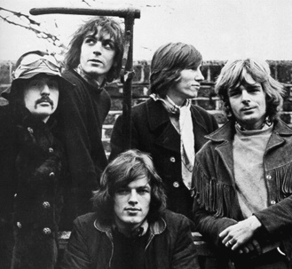
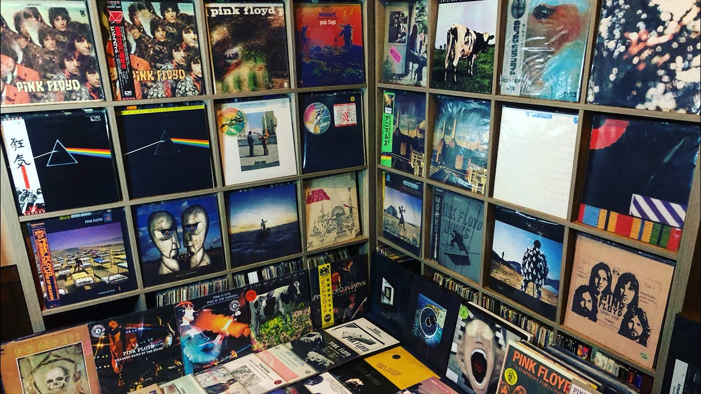

Pink Floyd

Pink Floyd are an English rock band formed in London in 1965. Gaining an early following as one of the first British psychedelic groups, they were distinguished by their extended compositions, sonic experimentation, philosophical lyrics and elaborate live shows. They became a leading band of the progressive rock genre, cited by some as the greatest progressive rock band of all time.
Pink Floyd were founded by Syd Barrett (guitar, lead vocals), Nick Mason (drums), Roger Waters (bass guitar, vocals), and Richard Wright (keyboards, vocals). Under Barrett's leadership, they released two charting singles and the successful debut album The Piper at the Gates of Dawn (1967). The guitarist and vocalist David Gilmour joined in January 1968; Barrett left in April 1968 due to deteriorating mental health. Waters became the primary lyricist and thematic leader, devising the concepts behind Pink Floyd's most successful albums, The Dark Side of the Moon (1973), Wish You Were Here (1975), Animals (1977) and The Wall (1979). The musical film based on The Wall, Pink Floyd – The Wall (1982), won two BAFTA Awards.
By 2013, Pink Floyd had sold more than 250 million records worldwide, making them one of the best-selling music artists of all time. The Dark Side of the Moon and The Wall were inducted into the Grammy Hall of Fame, and these albums and Wish You Were Here are among the best-selling albums of all time. Four Pink Floyd albums topped the US Billboard 200, and five topped the UK Albums Chart. Pink Floyd's hit singles include "See Emily Play" (1967), "Money" (1973), "Another Brick in the Wall, Part 2" (1979), "Not Now John" (1983), "On the Turning Away" (1987) and "High Hopes" (1994). They were inducted into the US Rock and Roll Hall of Fame in 1996 and the UK Music Hall of Fame in 2005. In 2008, Pink Floyd were awarded the Polar Music Prize in Sweden for their contribution to modern music.